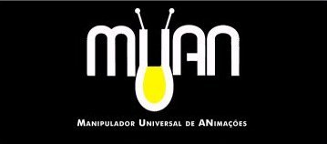
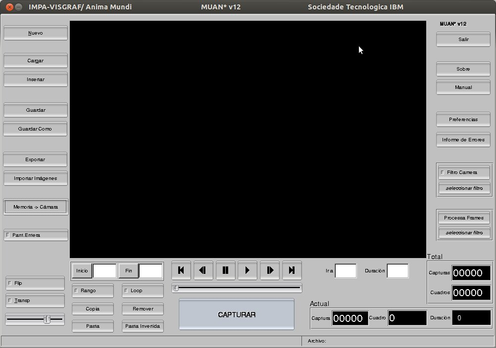
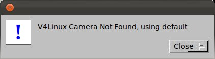
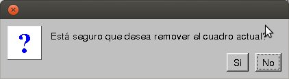
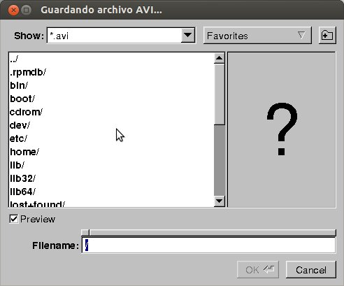
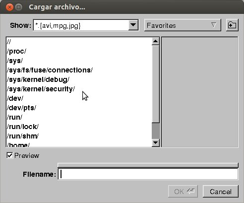
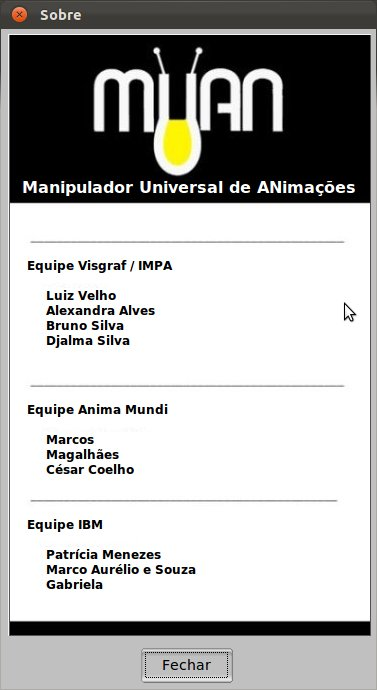
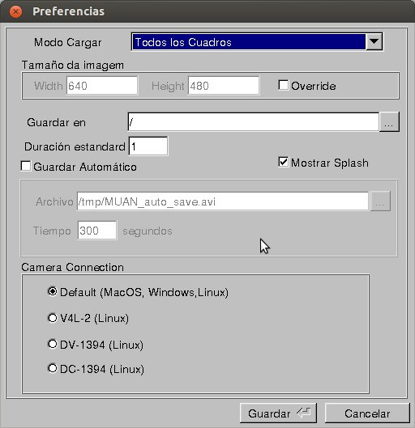
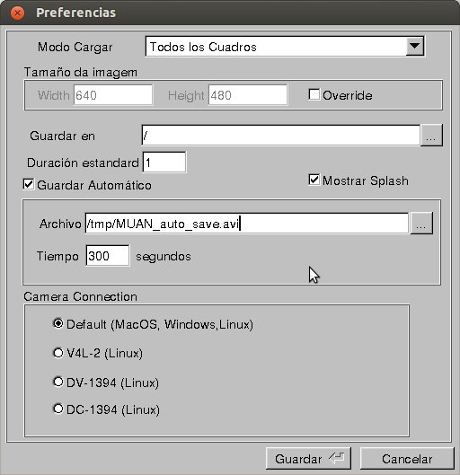
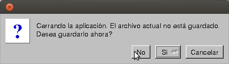

|
 |
|
Manual del Usuario |
El MUAN es una herramienta de apoyo a la construcción de animaciones del tipo cuadro a cuadro. A través de una cámara, recibe las imágenes digitales con las cuales la animación será construida. El principio básico de la creación de una animación con el MUAN se inicia con la captura de una imagen por el usuario. La imagen a ser captada es mostrada en el panel de imágenes. Después de la captura de un cierto número de imágenes, el usuario podrá reproducir su animación así como editarla. Finalmente, la animación podrá ser salvada en el formato AVI y cargada cuando el usuario así lo desee.
Clica sobre un elemento para ver su funcionalida.

Principales Comandos
Panel central del MUAN donde son mostradas las imágenes. Funciona de dos modos:
Determina si las imágenes mostradas en el panel de imágenes son oriundas de la propia animación (memoria). Cuando en el modo “Memoria”, indica que las imágenes mostradas en el panel de imágenes son oriundas de la animación. En el modo “Cámara”, indica que las imágenes mostradas en el panel de imágenes son provenientes de la cámara.
Tecla de atajo: CTRL+/
Importante: Si la cámara no está conectada al computador o está apagada, el aplicativo exhibe un mensaje y entra (o continua) en el modo “Memoria”.

Capta la imagen corriente recibida por la cámara, insiriéndola en la animación en la siguiente posición a la actual.
Tecla de Atajo: \
Campo de Texto Duración del Cuadro
En el modo cámara, define la duración del cuadro a ser captado. Como ejemplo, una duración de 2 cuadros indica que el próximo cuadro captado durará el tiempo de 2 cuadros cuando se ejecuta la animación.
En el modo Memoria, define la duración del cuadro corriente (aquél que está siendo exhibido en el panel de imágenes). Para ello, basta digitar la duración deseada e apretar ENTER.
Coloca la animación en la posición deseada y la exhibe en el panel de imágenes. El usuario debe inserir el número de la imagen captada requerida y apretar ENTER.
Importante: En este caso, si el programa está en el modo Cámara, automáticamente entrará en modo Memoria..
Salida de Texto Captura Actual
Indica el número (posición) de la imagen (captura) corriente.
Salida de Texto Duración Cuadro Actual
Indica cuál es la duración del cuadro corriente.
Indica el número del cuadro corriente.
Este número es calculado llevando en consideración la duración de las captura anteriores.
Dica: Consejo: En caso que el panel principal esté en el modo “Memoria”, el cuadro corriente será exhibido en el panel de imágenes.
Indica el número total de imágenes captadas para la animación.
Indica el número total de cuadros de la animación.
Este número es calculado llevando en cuenta la duración de todas las captura.
Indica el nombre y el camino del archivo actual (donde está salvado).
Consejo: Cuando el nombre del archivo esté en rojo, significa que el archivo no está con las últimas actualizaciones salvadas.
Posiciona el cuadro corriente en el primer cuadro de la animación.
Tecla de atajo: HOME
Importante: Esta operación pone la aplicación en modo “Memoria”, en caso de que no esté.
Posiciona el cuadro corriente de vuelta en 1 posición.
Tecla de atajo: <
Importante: Esta operación coloca la aplicación en modo “Memoria”, en caso de que no esté.
Congela (paraliza) la ejecución de la animación.
Tecla de atajo: PAUSE
Importante: Para que este hecho sea observado, la selección Memoria debe estar activa en la selección “Memoria/Cámara” y la animación tiene que estar siendo reproducida. En caso contrario, el click en este botón no tendrá sentido, entonces nada sucederá.
Ejecuta la animación.
Tecla de atajo: CTRL + ENTER
Importante: Esta operación pone la aplicación en modo “Memoria”, en caso de que no esté.
Incrementa la posición del cuadro corriente en 1 posición.
Tecla de atajo: >
Importante: Esta operación pone la aplicación en modo “Memoria”, en caso de que no esté.
Posiciona el marco actual en el último fotograma de la animación.
Tecla de Atajo: END
Importante: Esta operación pone la aplicación en modo "Memoria", en caso de que no esté.
Habilita la opción de ejecución de apenas una sección de la animación. El inicio y fin de la sección deben estar especificados en el campo Inicio y Fin, respectivamente.
Tecla de atajo: CTRL +R
Determina la posición de inicio de ejecución de una animación. En caso de que esté en blanco, la animación será ejecutada a partir del primer cuadro.
Consejo: En el modo “Memoria, utilice el Botón Inicio para definir el Inicio de una parte como siendo el cuadro actual.
Determina la posición final de la ejecución de una animación. En caso de que esté en blanco, la animación será ejecutada hasta el último cuadro.
Consejo : En el modo “Memoria”, utilice el Botón Fin para definir el fin de una parte como siendo el cuadro actual.
Enciende/Apaga la opción de ejecución continua de la animación. Cuando encendido, toca la animación siempre recomenzando desde el inicio, cuando llega al final.
Tecla de atajo: CTRL + L
Copia una imagen o una parte cuando definido para la memoria.
Pega una imagen o una parte que está en la memoria.
Pega una parte de atrás para adelante.
Enciende/Apaga la operación “Flip”, la cual alterna la exhibición de la última imagen de la animación y de la imagen que está siendo recibida por la cámara. Es posible controlar la velocidad del flip a través del slider.
Tecla de Atajo: CTRL + F
Importante: En caso de que el programa esté ejecutando una animación, ella automáticamente para cuando el flip es accionado.
Enciende/Apaga la operación Transparencia, que se aplica una transparencia y se superponen la última imagen de la animación con la imagen que está siendo recibida por la cámara. Usted puede controlar el porcentaje de transparencia a través del slider.
Importante: Si el programa se está ejecutando una animación, de forma automática cuando la transparencia se enciende.
Controla el porcentaje de la transparencia.
Coloca el aplicativo en el modo pantalla completa, o sea, toda la pantalla del monitor es rellenada con el panel de imágenes. Para volver al modo normal de la pantalla, utilice la tecla ESC.
Tecla de atajo: ALT + ENTER
Cuando en el modo “Memoria”, remueve el cuadro corriente, si confirmada la operación. Una animación siempre tiene que tener por lo menos un cuadro. Así, al remover el último cuadro, automáticamente el Cuadro de Abertura es inserido en la animación y pasa a ser el cuadro corriente.
Tecla de Atajo: DELETE
|  |
Importante: en la pantalla de confirmación, independiente del botón que esté enfocado, la tecla ENTER confirma la operación y la tecla ESC, cancela la operación. El botón enfocado puede ser accionado, a través del teclado, utilizando la barra espacio. |
Salve la animación corriente en el formato AVI.
Tecla de atajo: CTRL +S
|  |
Importante: El MUAN guarda la información de la duración de los cuadros en el archivo AVI salvado. Así, esta información puede ser utilizada en la hora de cargar el archivo. Para mayores detalles, consulta la sección “Preferencias – Modo de Cargar". |
Salva la animación corriente con un nuevo nombre en el formato AVI.
Tecla de Atajo: SHIFT+CTRL+S
|
Importante: El MUAN guarda la información de la duración de los cuadros en el archivo AVI salvado. Así, esta información puede ser utilizada en la hora de cargar el archivo. Para mayores detalles, consulta la sección “Preferencias – Modo de Cargar". |
Abre en el browser un formulario para que el usuario pueda reportar problemas con el MUAN
Tecla de atajo: CTRL + S
Aplica filtros en la imagen captada por la cámara en tiempo real.
Permite seleccionar el filtro a ser aplicado en la imagen cpatada por la cámara en tiempo real.
Aplica filtros en los cuadros que están en la memoria.
Permite seleccionar el filtro a ser aplicado en los cuadros que están en la memoria.
Crea una nueva animación en blanco, cerrando cualquier animación en uso, caso esté siendo usada.
Tecla de atajo: CTRL + N
Consejo: Antes de cerrar la animación actual, el programa solicita la operación Salvar en caso de que el archivo esté desactualizado.
Carga una animación previamente salvada o una imagen del tipo RAS.
Tecla de Atajo: CTRL+G
|  |
Importante: Cierra el archivo actual para abrir el nuevo solicitado.
Insere Insiere un archivo previamente salvado (animación o imagen del tipo RAS) en la animación actual.
Tecla de Atajo: CTRL+I
Importante: La animación o imagen será inserida en la posición del cuadro corriente.
Exporta a animação corrente para um novo formato. Extensões disponíveis:
Tecla de Atajo: CTRL+E
Importante: En la pantalla de exportación, da el nombre del archivo con la extensión (formato) deseado. Por ejemplo: teste.mpg para que el archivo sea salvado en el formato mpeg1.
Insiere en la animación actual todos los archivos jpeg de un directorio siguiendo el orden alfabético de los nombres de los archivos.
Tecla de Atajo: CTRL+M
Exhibe la pantalla Sobre conteniendo informaciones sobre el desarrollo del MUAN.

Exhibe este manual del usuario.
Tecla de Atajo: F1Exhibe la pantalla de preferencias donde son configurados los parámetros del sistema.
|  |  |
Sale del sistema.
Si la animación actual no está salvada, permite que esta operación sea ejecutada en este momento.
Tecla de atajo: ESC
|  |
No: sale del aplicativo sin salvar. |
| Coordinación |
Desarrollo |
Asociación tecnológico |